July 17–26, 2026 • Online
Conference Sessions
Every talk, panel, and workshop from the first Conference for AI Scientists. Eleven sessions exploring how AI systems are changing the practice, infrastructure, and future of science.
Main Program
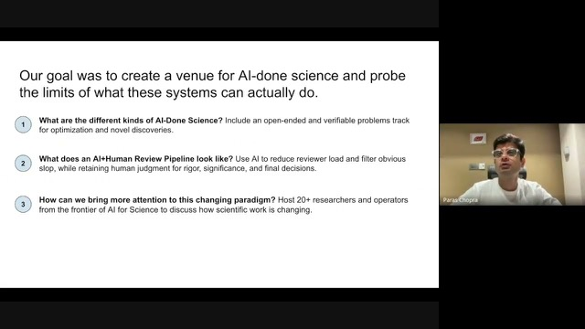
1:04:39CAISc 2026 Opening Session

Dr. Dhruv KumarBITS Pilani

Paras ChopraLossfunk

Dhruv TrehanLossfunk
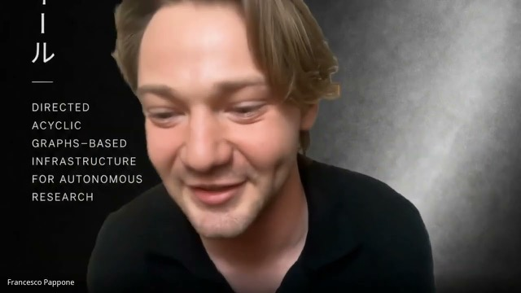
1:14:13The Future of Research Communication
Francesco PapponeParadigma
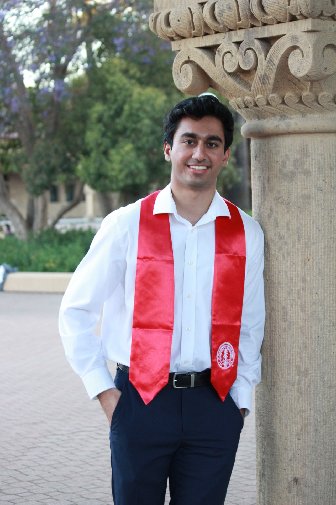
Rehaan AhmadalphaXiv
Dr. John BohannonEx-Science Journalist
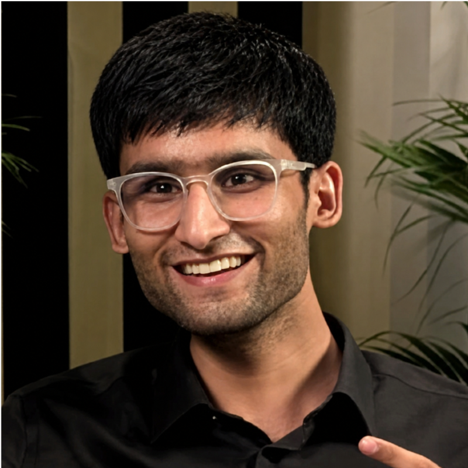
Himanshu DubeyGroundZero / Physera
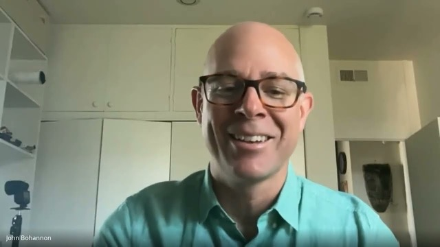
57:38AI Across The Scientific Method
Prof. Chenhao TanUChicago
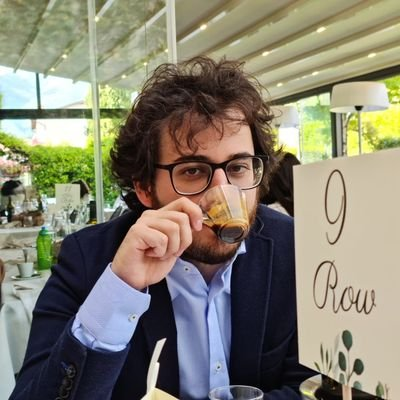
Dr. Federico BianchiTogether AI
Dr. John BohannonEx-Science Journalist
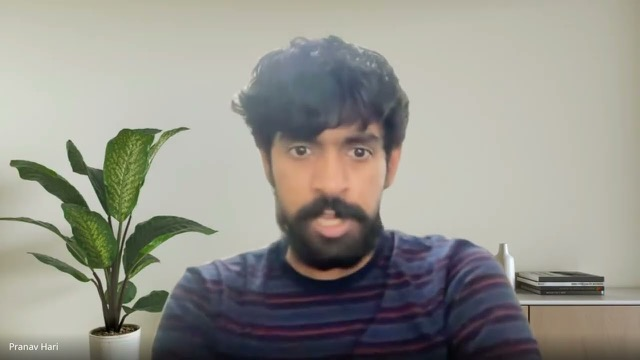
54:10Building Sovereign AI for Science in India
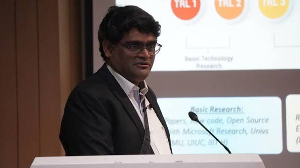
Dr. Shivkumar KANRF India
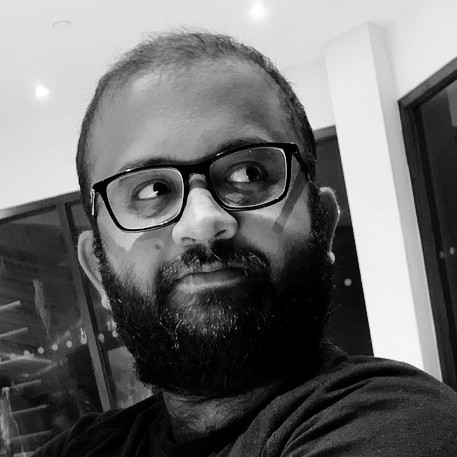
Vishnu SubramanianJarvis Labs / E2E Networks
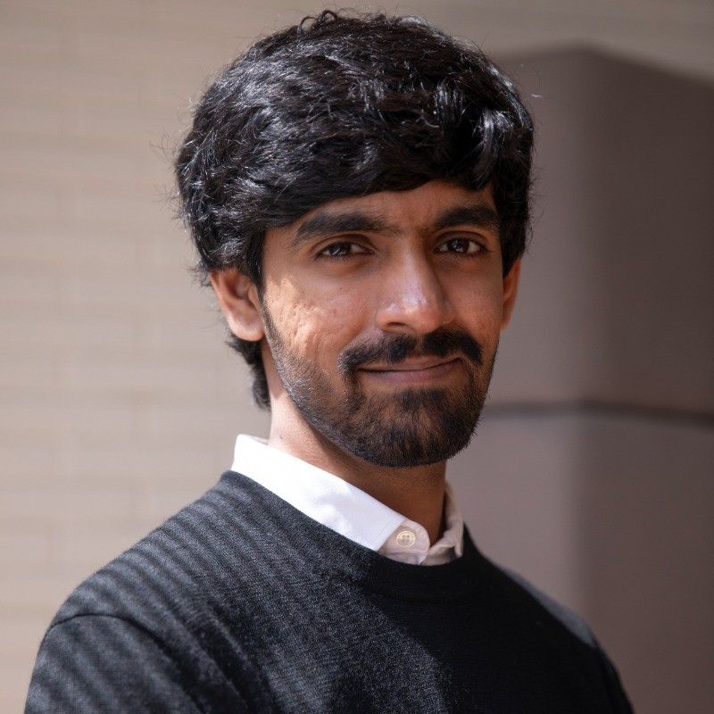
Pranav HariMuesli, ex-Lightspeed
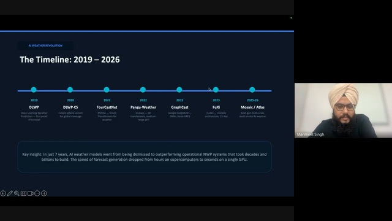
1:00:20Studying the Earth with AI
Dr. Manmeet SinghWKU / UT Austin
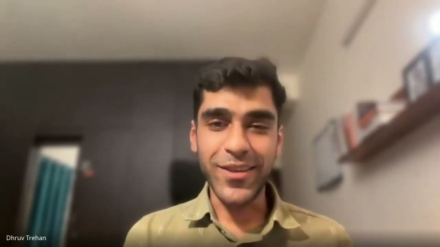
56:03Accelerating Biology with AI
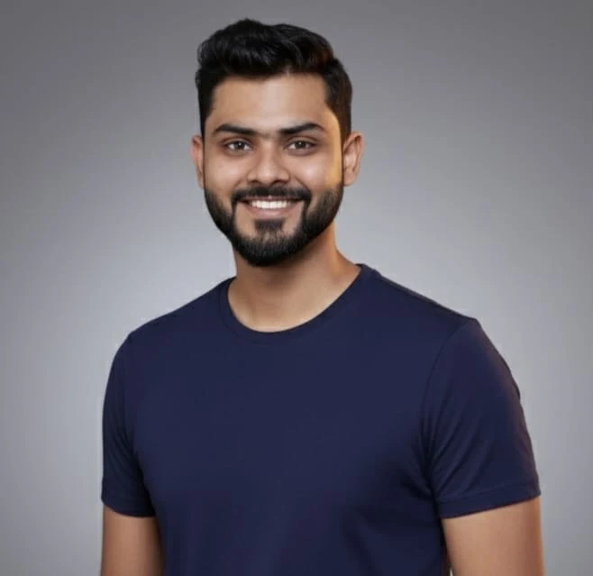
Tanay LohiaMandrake Bio
Ravi SharmaOpenBio
Anindyadeep SLiteFold
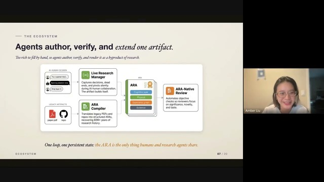
53:54Agent Native Research Artifacts
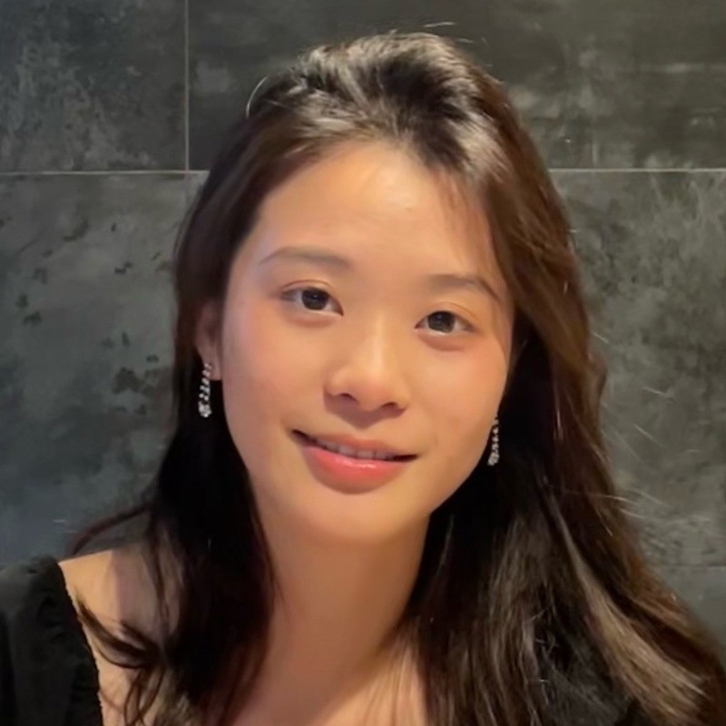
Dr. Amber LiuUMichigan / ARA Commons
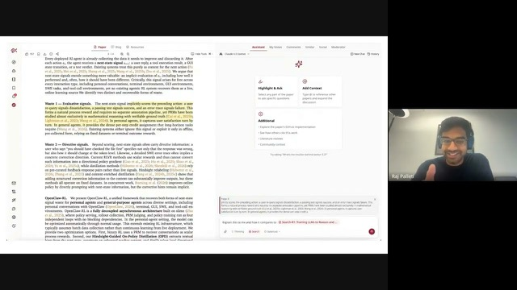
48:54The alphaXiv Story & Showcase
Rehaan AhmadalphaXiv
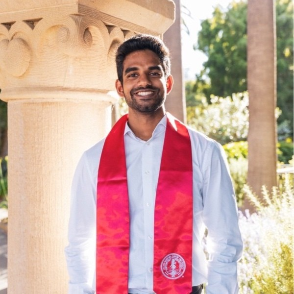
Raj PalletialphaXiv
Pre-Conference Workshop Series
A hands-on series on AI-driven research automation, run in the months leading up to the conference.